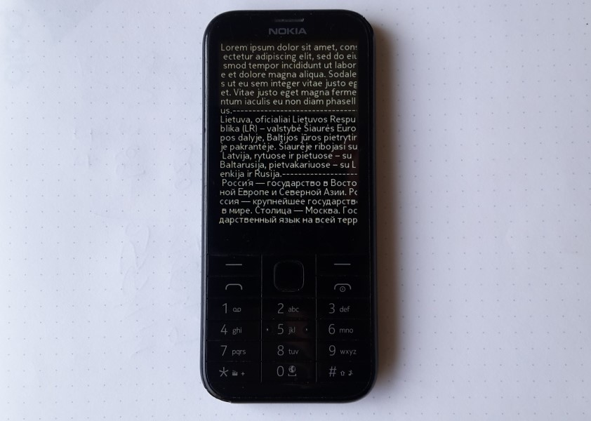

Basic text viewer to show text information from txt file for MRE platform (including Nokia S30+). Tested on Nokia 225 with display resolution 240x320. If exists automatically open "default.txt" file on storage card or phone memory. LEFT_SOFTKEY - open file, RIGHT_SOFTKEY - exit app, KEY_DOWN - next page, KEY_UP - limited up functionality (one page back), KEY_NUM1 - display current filename and current page number, KEY_NUM9 - go to End, KEY_NUM7 - go to Home, KEY_NUM8 - go forward 5 pages, KEY_NUM6 - go forward 10% pages. For using with Nokia mobile phone, app must be signed with IMSI (your SIM card) code. https://vxpatch.luxferre.top. Application files - "TextvpB.vxp" "TextvpW.vxp".
